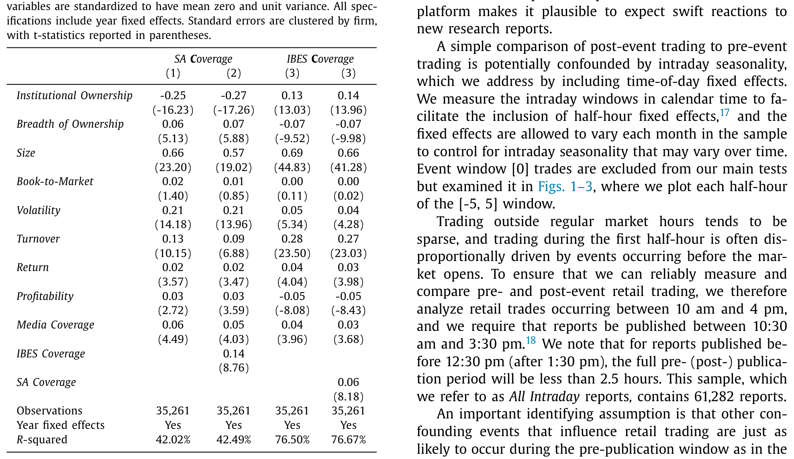
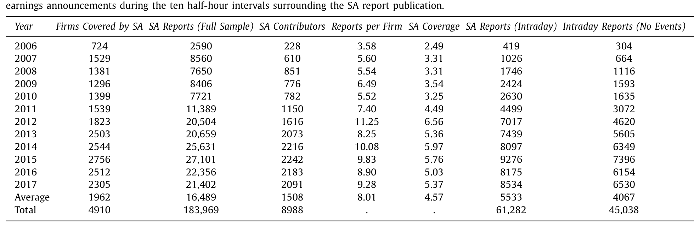
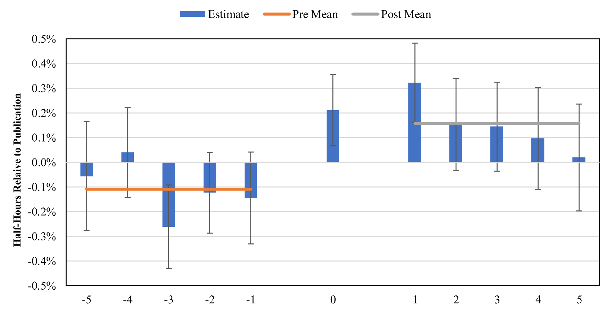
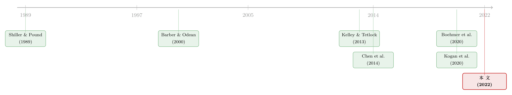

把研究「众包」给散户之后，他们的下单反而更聪明了
本文读的是 Farrell, Green, Jame & Markov (2022, Journal of Financial Economics)：作者利用 Seeking Alpha 一篇研报「从投稿到发布」之间那段编辑审核延迟，比较同一天发布前后两个日内窗口里散户订单的预测力，发现发布之后散户的「买卖失衡」对未来五日收益与现金流消息的预测能力陡然上升——一个标准差的订单失衡，能多预测 0.26 个百分点的未来收益。结论是：技术驱动的「研究众包」，真的让散户变得更有信息了。
1 一个被反复唱衰的命题
投资从来都是一件「社交」的事。早在 1989 年，Shiller 和 Pound 就用问卷证据告诉我们，投资者买什么、卖什么，深受身边人的影响；后来 Duflo 和 Saez（2002, 2003）、Ivković 和 Weisbenner（2007）一路把这件事做实——你的同事、你的邻居，会悄悄改写你的投资组合。
进入社交媒体时代，这种「社交」被技术放大了无数倍。散户们不再只是看客，他们涌入各类财经社区，既消费内容，也生产内容：讨论新闻、分享研报、争论策略。听上去很美好，对吧？更多的信息、更低的门槛、更平的「信息地形」。
但监管者和学术界的主流声音，长期以来却是怀疑甚至唱衰的。一方面，理论上同伴互动会加剧行为偏差（Han, Hirshleifer & Walden, 2021）；另一方面，实证证据也大多站在「唱衰」这一边：Heimer（2016）发现社交互动放大了处置效应，Cookson、Engelberg 和 Mullins（2020）描述了「回音室」效应，Ammann 和 Schaub（2020）则质疑散户根据网帖交易到底有没有用。早期文献干脆把散户定性为「噪声交易者」——Barber 和 Odean（2000）那句著名的「交易有害你的财富」，至今还在很多人脑子里回响。
注意，这里有一个微妙但要命的逻辑空当：「社交媒体里含有投资价值」，和「社交媒体让散户的交易更有信息」，是两件完全不同的事。Chen 等（2014）早就证明了 Seeking Alpha 的研报和评论能预测未来收益和盈余惊喜——可那讲的是「内容有料」。内容有料，不等于散户接住了这份料、并据此下了更聪明的单。这中间隔着一道鸿沟。
本文要填的，正是这道鸿沟。
2 为什么偏偏挑中 Seeking Alpha
要回答「社交媒体是否让散户交易更有信息」，第一步是找一个干净的舞台。作者选了 Seeking Alpha（下称 SA）——美国最大的投资类社交媒体之一，月访问量约 4000 万、独立访客约 1500 万。它有三个别处难得的好处。
首先，它提供的是深度分析，而非碎片化的情绪。StockTwits 限制帖子字数，Estimize 主攻短期盈余预测，Motley Fool 的选股缺乏详细论证；相比之下，SA 上的是一篇篇完整的研报。
接着，一个自然的问题是：这些「众包」研报，到底是写给谁看的？作者先做了一份「研究覆盖的决定因素」回归。结果很漂亮：控制其他公司特征后，机构持股比例（institutional ownership）每上升一个标准差，SA 覆盖度（SA Coverage）下降约 25%；而股东人数即所有权广度（breadth of ownership）每上升一个标准差，SA 覆盖度上升约 6%。券商研报（IBES Coverage）的模式则恰好相反——机构持股越高，券商盯得越紧。这与 Brown 等（2015）的调查互相印证：超过 80% 的卖方分析师把对冲基金和共同基金客户视为「非常重要」，只有 13% 把散户当回事。

Table 2
一句话：券商研究是机构的生意，SA 是散户的窗口。这就为「研究 SA → 看散户」铺好了路。（散户究竟栖息在市场的哪个角落，可参见《散户的栖息地：他们不是更笨，只是去了别人不愿去的地方》。）
然后，是真正关键、也最巧妙的一步——SA 的研报不是突发新闻，而是分析，并且每篇都要经过编辑审核，常常要改好几轮。一位首次投稿的作者描述，被反复要求「补充来源、把投资论点说得更透、再加财务报表分析」，最后感叹「一篇文章背后的东西，比我原以为的难得多」。
这道审核引致的发布延迟，正是本文识别策略的命根子。
3 识别策略：把「新闻」从「研报」里剥出来
评估 SA 研报对散户交易影响的最大障碍是什么？是反事实：如果没有这篇研报，散户本来会怎么交易？更麻烦的是，SA 研报本身可能是被某个底层信息事件「触发」的——比如公司出了个利好，分析师才动笔。那么发布后散户交易变活跃，到底是 SA 研报的功劳，还是那个底层新闻的功劳？
作者的解法是：用同一天里发布「前后」两个日内窗口做对照。
具体地，他们围绕每篇 SA 研报的发布时点，取十个半小时的日内事件窗口。发布之后的窗口，度量的是「社交网络引致的交易」；发布之前（但在可能触发研报的信息事件之后）的窗口，则捕捉「假如没有这篇 SA 研报，本应发生的交易」这一反事实。由于编辑审核把发布时点的日内时机「打乱」了，注入了一点随机性，这就让前后对照变得可信。
识别的灵魂在这句话里：审核延迟割断了「研报内容」与「触发新闻」在时间上的纠缠。作者还做了安慰剂式检验——发现传统媒体文章、券商研报、盈余公告在 SA 发布的日内窗口前后并不系统性地扎堆，正符合识别假设。
回归设计上，作者放入了单篇报告固定效应（individual report fixed effects），等于把每篇研报「发布后」的日内表现，拿它自己「发布前」的表现做基准来比，标准误按公司聚类。核心回归考察的是：聚合散户订单失衡（retail order imbalance）预测未来五日横截面收益的能力，在发布前后是否变化。
订单失衡本身用 Boehmer 等（2020，下称 BJZZ）的方法构造。这里要先说清楚一个技术细节——怎么从 TAQ 数据里把散户的单子认出来。BJZZ 抓住散户交易的两个制度特征：其一，散户的股票交易大多在场外成交（由券商自营库存或批发商接走），TAQ 用交易所代码「D」标记这类成交；其二，散户的市价单通常能拿到不到一美分的微小价格改善（0.01–0.4 美分），而机构单往往落在整数或半美分上。于是：成交价略低于整数美分 → 认定为散户买入；略高于 → 散户卖出。这套方法偏保守，但据 BJZZ 自己说「大概能捕捉大多数散户交易」，且与 Kelley 和 Tetlock（2013）专有数据的相关性平均达 0.452。
订单失衡的定义就是最朴素的那个：
$$ OIB_{i,t} = \frac{B_{i,t} - S_{i,t}}{B_{i,t} + S_{i,t}} $$
其中 \(B_{i,t}\) 与 \(S_{i,t}\) 分别是股票 \(i\) 在窗口 \(t\) 的散户买入与卖出量。本文最关心的回归，本质上是把未来五日收益对「订单失衡 × 是否发布后」这一交互项做投影：
$$ Ret_{i,\,t \to t+5} = \beta_1\, OIB_{i,t} + \beta_2\, \big(OIB_{i,t} \times Post_{t}\big) + \gamma\, Post_{t} + \delta_{report} + \varepsilon_{i,t} $$
这里 \(Post_t\) 是「发布后窗口」的示性变量，\(\delta_{report}\) 是单篇报告固定效应。真正被盯着看的，是交互项系数 \(\beta_2\)——它度量的就是「发布额外带来的散户交易信息含量」。
4 数据：十二年、十八万篇、四千九百家公司
样本来自 2006–2017 年 SA 网站上发布的全部研报，限定为单只股票、且能匹配上 CRSP-Compustat 与 TAQ 的普通股。最终落到 183,969 篇单票研报，覆盖 4910 家公司，出自 8988 位贡献者之手。
这个平台的「民主化」是肉眼可见地长起来的：2006 年只有 724 家公司、228 位贡献者、2590 篇研报；到 2017 年，已是 2305 家公司、2091 位贡献者、21,402 篇研报。覆盖率从 2006 年占 CRSP-Compustat-TAQ 样本的 15.2%，一路涨到 2015 年的 72.2%。平均而言，一家有 SA 覆盖的公司每年约有 8.0 篇研报，出自 4.6 位不同作者。

Table 1
本文的主战场是那约三分之一在交易时段内（10:30am–3:30pm）发布的研报——平均每年 5533 篇，其中 4067 篇在前后十个半小时窗口里没有被其他事件（媒体文章、卖方研报、盈余公告）污染。正是这批「干净」的日内样本，撑起了识别。
顺带一提，SA 覆盖的公司平均市值约 610 亿美元，比市值加权市场组合（890 亿）小，却远大于等权市场组合（46 亿）——也就是说，SA 并不只盯着小盘股，它的覆盖面其实和整个市场组合差不太远。
5 主要结果：发布之后，散户的单子开始「说真话」
先看交易强度。SA 研报发布后的第一个半小时，聚合散户交易量比发布前的半小时高出 7.68%。而且，那些能预测未来收益的研报情绪指标——报告语气（report tone）、贡献者自身的持仓方向（Campbell et al., 2019; Chen et al., 2014）——能解释发布后的散户订单失衡，却解释不了发布前的失衡。换句话说，散户不是在 SA 发布之前就「闻到味」抢跑，他们是在读到研报之后才动手的。这本身就否定了「散户在对某个未观测到的信息事件做反应」的替代解释。
再看信息含量，这是全文的核心。结果是：一个标准差的发布后散户订单失衡所预测的未来收益，比一个标准差的发布前订单失衡多出 0.26 个百分点。更重要的是「时间形状」——作者把发布前的五个半小时窗口逐一估计，没有发现信息含量的任何上升趋势；上升只发生在发布之后。

Figure 3: plots the estimates from Specification (2) of
这张图（对应 Specification (2) 的逐窗口估计）是整篇论文的「定海神针」：如果发布后的预测力上升只是某种「事前趋势」的延续，那它在发布前就该缓缓爬升——可它没有，它是在发布那一刻陡然跳起的。平行趋势（parallel trends）的味道，被这张图坐实了。
但真正关键的一步在于：预测力上升，未必等于「信息」。它也可能是价格压力（price pressure）或流动性提供（liquidity provision）伪装成的。作者用三道检验把这两个对手一一排除：
- 没有反转。 发布后那段可预测的收益，在随后一个季度里没有反转——若是价格压力把价格推离基本面，迟早要弹回来，可它没弹。
- 分解订单失衡。 仿照 BJZZ，把订单失衡拆成三块：持续性成分（捕捉价格压力）、反向成分（捕捉流动性提供）、以及残差成分（捕捉知情交易）。结果，那块残差（知情）成分仍是高度显著的收益预测因子。
- 预测「基本面消息」本身。 发布后的五个半小时里，散户订单失衡预测「分析师盈余预测修正」和「传统媒体情绪」的能力同步增强。散户的单子，提前嗅到了将来要发生的基本面消息。
到这一步，「散户更有信息」已经站住脚了。
6 反转：他们不是在「抄」研报的作业
于是反转出现——一个外行的直觉会说：散户无非是照搬了研报里的观点（看多就买、看空就卖）嘛，谈何「自己的信息」？
作者的回答是：发布后散户交易所揭示的增量信息，与研报语气、贡献者持仓所揭示的信息，基本是正交的。也就是说，散户并不是被动地跟着社交媒体上那张嘴走，而是在主动地从研报里淘出有价值的东西——很可能是研报激发了他们自己的进一步研究和判断。
顺着这个逻辑，作者提出一个可证伪的猜想：质量更高的研报，应当带来更知情的交易。检验下来正中靶心——由「更厉害」的贡献者撰写的报告（评论数更多、作者有强学术背景、或过往报告影响力更大），其发布后散户订单失衡对未来收益和现金流消息的预测，更令人信服。
而硬币的另一面，是 Kogan、Moskowitz 和 Niessner（2020）、Mitts（2020）、Dyer 和 Kim（2021）警告过的「假」研报。作者把匿名发布、或文本真实性得分偏低的报告识别为「fake」。这些报告同样能撬动散户的交易方向与强度，但其后果耐人寻味：假报告发布后的散户订单失衡，能预测一周收益、却预测不了五周收益；而非假报告恰好相反，对五周收益的预测更强。一句话——一小撮「带节奏」的研报，确实诱发了把价格短暂推离基本面的、不知情的散户交易，但这股力量在更长的窗口里就散掉了。
这恰好呼应了散户在别的市场里被「算计」的故事——比如《一次「拆股」，如何把散户钉在最高点》。技术既能赋权，也能被用来收割；本文的可贵之处，是把「赋权」这一面用干净的识别证了出来。
7 文献脉络
把这条线索拉直了看，会清楚很多。
起点是「散户=噪声交易者」的经典叙事：Barber 和 Odean（2000）、Kumar 和 Lee（2006）、Frazzini 和 Lamont（2008）、Hvidkjaer（2008）、Barber、Odean 和 Zhu（2009）——散户被刻画为受行为偏差驱动、把价格推离基本面的群体。与此平行的，是「投资是社交的」这条线：Shiller 和 Pound（1989）开篇，Duflo 和 Saez（2002, 2003）、Ivković 和 Weisbenner（2007）接力。
接着，风向变了。Kaniel、Liu、Saar 和 Titman（2012）、Kelley 和 Tetlock（2013, 2017）、以及方法论上居功至伟的 Boehmer、Jones、Zhang 和 Zhang（2020）开始发现：散户其实存在知情交易。与此同时，社交媒体「含金量」的证据也在积累：Chen 等（2014）证明 SA 内容能预测收益与盈余，Jame 等（2016）肯定了众包盈余预测的价值，Bartov、Faurel 和 Mohanram（2018）则在 Twitter 上找到了预测力。

但「内容有料」与「散户更聪明」之间那道鸿沟，始终没被严肃地跨过——反方还摆着 Heimer（2016）、Cookson 等（2020）这些「社交媒体加剧偏差」的证据。本文（2022）所处的位置，正是把这道鸿沟跨过去的那一脚：它不再问「SA 有没有料」，而是用审核延迟做识别，直接回答「SA 是否让散户的交易更有信息」。同时它也没有回避另一面——借 Kogan 等（2020）、Mitts（2020）的「假新闻」视角，承认一小撮研报确实在误导。
8 评论与延伸（Q&A + 研究方向）
(a) 几个可能的疑问
Q：用「编辑审核延迟」做识别，真的干净吗？会不会作者把稿子写完、又赶在某个利好临近时投出去？
这是最该担心的内生性。作者的两道防线是：其一，审核要改好几轮，发布的日内时点带有外生随机性；其二，他们直接检验了媒体文章、券商研报、盈余公告不会在 SA 发布的日内窗口前后系统性扎堆。再加上「发布前五个半小时无任何信息含量上升趋势」这个事实，抢跑/择时的故事很难同时解释这些。识别不是无懈可击，但相当扎实。
Q：BJZZ 用「次美分价格改善 + 交易所代码 D」识别散户，会不会把单子认错？
会漏、但不太会认错。BJZZ 自己强调这套方法的「一类错误」很低——被标成散户的，极大概率真是散户；代价是漏掉一部分（非市价限价单、在正规交易所成交的散户单）。它与 Kelley-Tetlock 专有数据的相关性平均
0.452，不完美，但足以支撑「聚合订单失衡」层面的结论。
Q：「预测力上升 0.26 个百分点」——这个量级算大吗？
放在五日横截面收益的预测上，这个增量是经济上可观的，而且是相对于发布前的同一批股票、同一篇研报比出来的，已经吸走了大量公司层面的混淆。它度量的是「发布这件事额外注入的信息」，不是散户交易的总预测力。
Q：会不会只是价格压力或流动性提供，被误读成了「信息」？
作者专门堵了这两条路：发布后的可预测收益在随后一个季度不反转（排除价格压力）；把订单失衡分解出的知情残差成分仍显著预测收益（区分于流动性提供）；而且散户的单子还能提前预测分析师修正与媒体情绪——价格压力是讲不出这个故事的。
Q：散户到底是「自己挖信息」还是「抄研报观点」？
关键证据是正交性：发布后散户揭示的增量信息，与研报语气、作者持仓方向基本无关。如果只是照抄，增量信息就该被研报情绪「吃掉」。再加上「越厉害的作者 → 越知情的交易」，更像是研报激发了散户的主动研究，而非替他们做决定。
Q：那「假研报」的存在，是不是把整篇结论推翻了？
不。假研报确实诱发了交易，但其影响短命——只预测一周、不预测五周收益；非假研报才驱动更长窗口的可预测性。所以结论是「主流是赋权、少数是收割」，两面并存，而非互相抵消。
(b) 几个可能的研究问题与提案
1. 把这套识别搬到公司债市场。 【经济故事】股票市场的散户研究众包已被证明有信息，但公司债市场长期被认为是「机构的游乐场」、散户几乎缺席。近年来散户通过债券 ETF 和零佣金平台越来越多地介入信用市场——他们的交易有没有信息？社交媒体研报会不会同样让债券散户更知情？ 【可行性】中。难点在于散户债券交易的识别——TRACE 有成交但难分零售/机构，需要借助 ETF 申赎或经纪商层面数据。识别仍可沿用「研报发布前后窗口」，但债券日内流动性稀疏，统计功效是真问题。
2. 外资散户 vs 本土散户，谁从「研究民主化」里获益更多？ 【经济故事】SA 这类平台天然跨境，外国散户面临语言、时区、信息劣势。技术驱动的研究众包，是不是恰恰更能「补」上外资散户的信息缺口、缩小他们与本土投资者的信息差？这直接关系到「信息地形是否被拉平」的核心命题。 【可行性】中偏低。需要带投资者地理标签的交易数据（如某些经纪商或特定市场的 KYC 数据），公开 TAQ 无法区分国籍；识别可保留发布前后设计，但数据获取是主要瓶颈。
3. 流动性视角：SA 研报发布如何改变做市商的报价与逆向选择？ 【经济故事】如果发布后散户交易确实更知情，那么做市商应当感知到逆向选择上升，从而在发布后的日内窗口拉宽买卖价差、压缩深度。把本文的「信息含量」翻译成做市商一侧的流动性成本，能给「知情」一个独立的、来自报价端的证据。 【可行性】高。TAQ 的报价数据现成，价差/深度的日内事件研究是成熟工具，识别策略可直接复用本文的发布前后对照。这是一个 doable 且自然的延伸。
4. 贡献者的「职业生涯」：写 SA 研报，是不是一条通往专业岗位的阶梯？ 【经济故事】作者提到许多贡献者的动机包括「被看见」和「职业机会」。那些发布后引发最知情交易的作者，后来是否真的进入了卖方/买方机构？这能把「研究民主化」与劳动力市场连起来。 【可行性】中。需要把 SA 作者名匹配到 LinkedIn/IBES 分析师名册，匹配噪声大；但 Farrell, Jame & Qiu（2020）已在做「非职业分析师技能」的横截面，数据基础是有的。
9 我的判断与参考文献
贡献。 这篇论文最漂亮的地方，不是它发现了「社交媒体有用」——那一点 Chen 等（2014）早就有了——而是它干净利落地跨过了「内容有料 ≠ 散户更聪明」这道鸿沟。审核引致的发布延迟是一把锋利的手术刀，单篇报告固定效应又把混淆压到了最低；再配上「不反转 + 知情残差 + 预测基本面消息 + 与研报情绪正交」这一整套组合拳，「散户在主动挖信息」这个反直觉的结论被钉得很牢。它同时给「研究民主化能拉平信息地形」这一政策叙事，提供了少见的、带因果味道的实证支点。
对识别的担忧。 我仍有两点保留。其一，发布的日内时点是否真的「外生」，终究依赖「编辑何时按下发布键」与「市场状态」无关这一不可直接检验的假设；作者的安慰剂检验缓解了它，但没法彻底证伪一个足够聪明的择时故事。其二，结论建立在聚合散户订单失衡之上，正如作者自己坦言，这是否转化为单个散户更好的交易业绩，是另一个只能用投资者层面数据回答的经验问题（Barrot, Kaniel & Sraer, 2016）——「群体更知情」和「每个人都赚钱」之间，还隔着一层。
后续想看到什么。 我最想看的，是把这套「发布前后」识别搬到信用市场和外资持有人上去（见上文研究提案 1、2）；以及从做市商报价一侧给「知情」找一个独立证据（提案 3）。如果这些方向都能给出一致的结论，那么「技术让边缘投资者更知情」就不再只是一个股票市场的局部现象，而是一条更普遍的规律。
参考文献
- Barber, B., Odean, T. (2000). Trading is hazardous to your wealth: the common stock investment performance of individual investors. Journal of Finance 55, 773–806.
- Barber, B., Odean, T., Zhu, N. (2009). Do retail trades move markets? Review of Financial Studies 22, 151–186.
- Barrot, J.N., Kaniel, R., Sraer, D. (2016). Are retail traders compensated for providing liquidity? Journal of Financial Economics 120, 146–168.
- Bartov, E., Faurel, L., Mohanram, P. (2018). Can Twitter help predict firm-level earnings and stock returns? Accounting Review 93, 25–57.
- Boehmer, E., Jones, C., Zhang, X., Zhang, X. (2020). Tracking retail investor activity. Journal of Finance 76, 2249–2305.
- Brown, L., Call, A., Clement, M., Sharp, N. (2015). Inside the "black box" of sell-side financial analysts. Journal of Accounting Research 53, 1–47.
- Campbell, J., DeAngelis, M., Moon, J. (2019). Skin in the game: personal stock holdings and investors' response to stock analysis on social media. Review of Accounting Studies 24, 731–779.
- Chen, H., De, P., Hu, J., Hwang, B.H. (2014). Wisdom of the crowds: the value of stock opinions transmitted through social media. Review of Financial Studies 27, 1367–1403.
- Cookson, J.A., Engelberg, J., Mullins, W. (2020). Echo Chambers. University of Colorado at Boulder, working paper.
- Duflo, E., Saez, E. (2003). The role of information and social interactions in retirement plan decisions: evidence from a randomized experiment. Quarterly Journal of Economics 118, 815–842.
- Dyer, T., Kim, E. (2021). Anonymous equity research. Journal of Accounting Research 59, 575–611.
- Farrell, M., Green, T.C., Jame, R., Markov, S. (2022). The democratization of investment research and the informativeness of retail investor trading. Journal of Financial Economics 145, 616–641.
- Frazzini, A., Lamont, O. (2008). Dumb money: mutual fund flows and the cross-section of stock returns. Journal of Financial Economics 88, 299–322.
- Han, B., Hirshleifer, D., Walden, J. (2021). Social transmission bias and investor behavior. Journal of Financial and Quantitative Analysis, forthcoming.
- Heimer, R. (2016). Peer pressure: social interaction and the disposition effect. Review of Financial Studies 29, 3177–3209.
- Hvidkjaer, S. (2008). Small trades and the cross-section of stock returns. Review of Financial Studies 21, 1123–1151.
- Ivković, Z., Weisbenner, S. (2007). Information diffusion effects in individual investors' common stock purchases: covet thy neighbors' investment choices. Review of Financial Studies 20, 1327–1357.
- Jame, R., Johnston, R., Markov, S., Wolfe, M. (2016). The value of crowdsourced earnings forecasts. Journal of Accounting Research 54, 1077–1110.
- Kaniel, R., Liu, S., Saar, G., Titman, S. (2012). Individual investor trading and return patterns around earnings announcements. Journal of Finance 67, 639–680.
- Kelley, E., Tetlock, P. (2013). How wise are crowds? Insights from retail orders and stock returns. Journal of Finance 68, 1229–1265.
- Kogan, S., Moskowitz, T., Niessner, M. (2020). Fake News in Financial Markets. MIT, working paper.
- Kumar, A., Lee, C. (2006). Retail investor sentiment and return comovements. Journal of Finance 61, 2451–2486.
- Mitts, J. (2020). Short and distort. Journal of Legal Studies 49(2), 287–334.
- Shiller, R.J., Pound, J. (1989). Survey evidence on diffusion of interest and information among investors. Journal of Economic Behavior & Organization 12, 47–66.